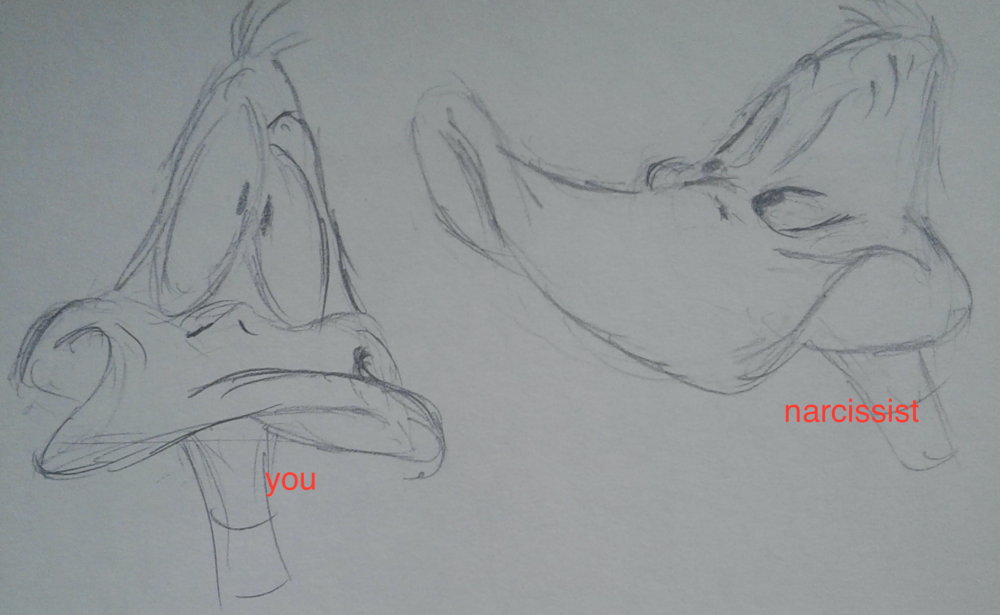

|
IF narcissism THEN study this

- What is Narcissistic Abuse?
-
- Glossary of Narcissistic Patterns & Processes
-
- Glossary of Narcissists' Mindset & Manipulative Techniques
-
- narcissistic supply (positive | negative)
- gaslighting (deception)
- love bombing (baiting)
- hoovering (methods to draw you back into narcissistic cycle)
- helicoptering (persistent talking, stalking)
- validation seeking
- triangulation (smear campaign, flying monkeys, enablers)
- spins (laundering, changing goal posts, lies, framing)
- Learning New Responses to Narcissism
-
- How to negotiate with a narcissist
- How to deflect an attack
- How to regroup after an attack
- How to litigate with narcissist
- Leaving Narcissistic Situation
-
- Boundaries
- No Contact
- Grey rock communication
- Emotional neutral: stop - breath, redirect
- Dealing with litigation
- Damage from Narcissistic Abuse
-
- PTSD, C-PTSD
- Anxiety
- Depression
- Physical Symptoms
- Brain Fuck - What is reality?
- Healing From Narcissistic Abuse
-
[back to Explainers]
|